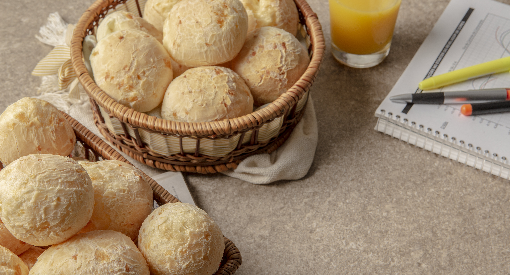
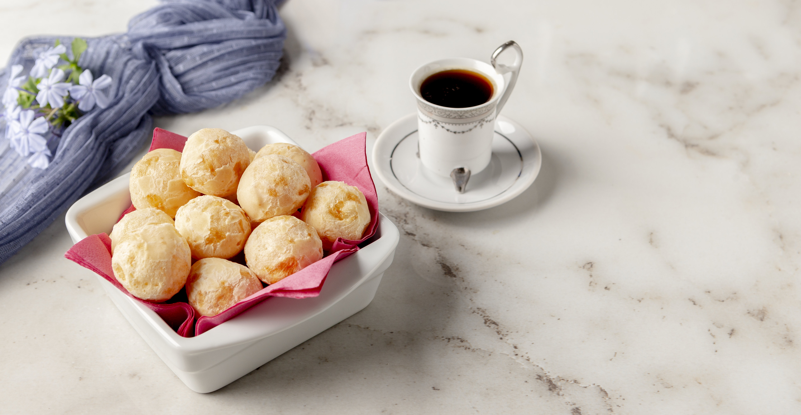
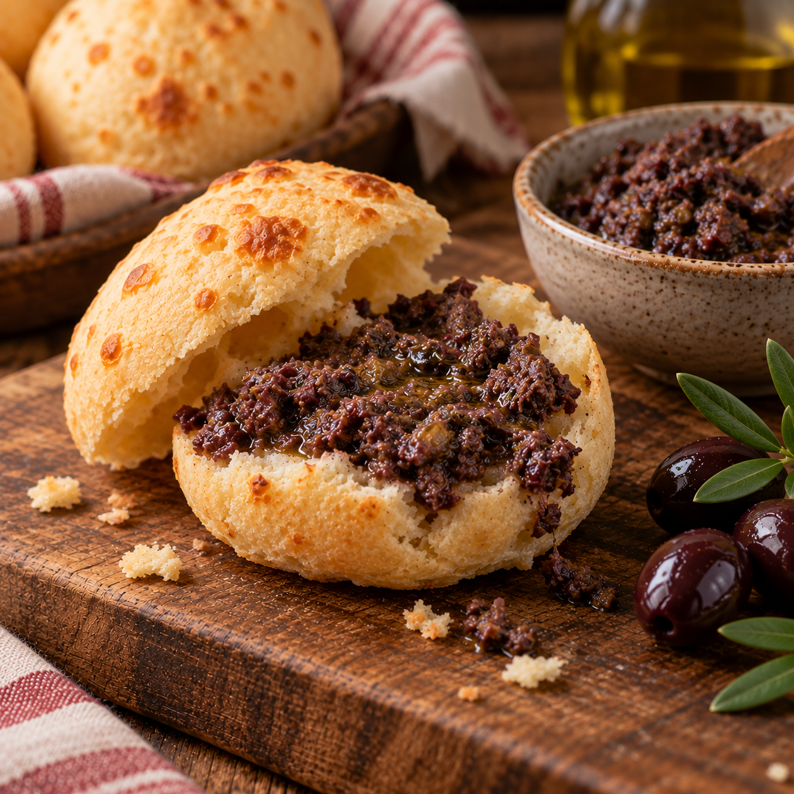
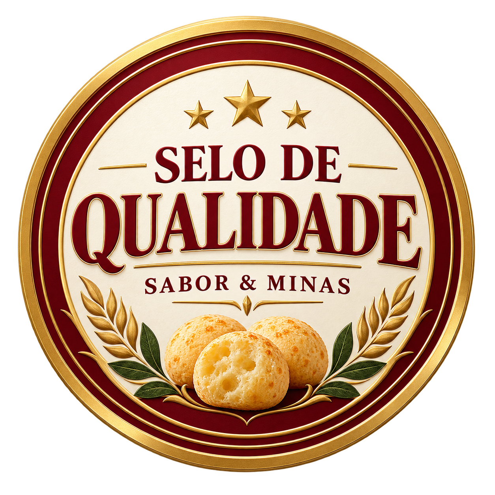
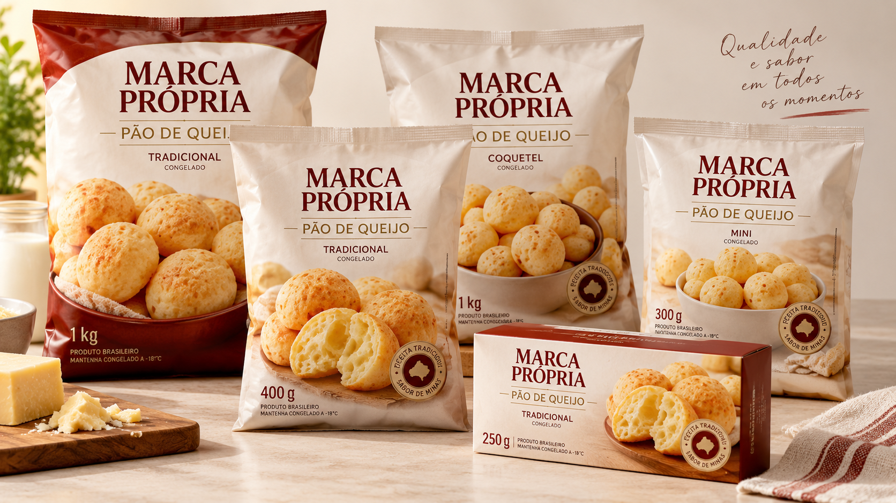

NOSSA HISTÓRIA
Tradição que alimenta
boas histórias
A Sabor & Minas nasceu do amor pela tradição mineira e pelo pão de queijo. São anos de história, levando sabor, qualidade e praticidade para a sua mesa.
CONHEÇA NOSSA HISTÓRIA →Pão de queijo com receita tradicional, qualidade e aquele sabor que conquista gerações.
CONHEÇA NOSSOS PRODUTOS →Uma linha completa de produtos para o seu dia a dia, com a qualidade Sabor & Minas.

Tradicional · Multigrãos · Broinha de Milho

Multigrãos · Premium · Lanchinho

Palito · Lanche · Super Lanche

Coquetel · Chipa

Mini Chipa · Dadinho de Tapioca

Pão de Alho
A Sabor & Minas nasceu do amor pela tradição mineira e pelo pão de queijo. São anos de história, levando sabor, qualidade e praticidade para a sua mesa.
CONHEÇA NOSSA HISTÓRIA →
Descubra receitas especiais para deixar seus momentos ainda mais saborosos.
VER RECEITAS →
Processos rigorosos e matérias-primas selecionadas para garantir o melhor sabor.
SAIBA MAIS →
Desenvolvemos produtos com a sua marca, com toda a qualidade Sabor & Minas.
CONHEÇA →Nossos produtos estão em supermercados, padarias e estabelecimentos em todo o Brasil.